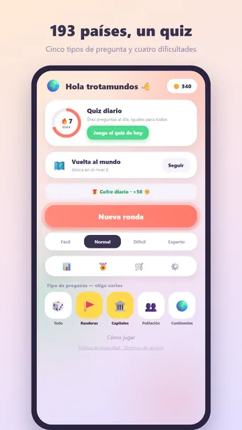
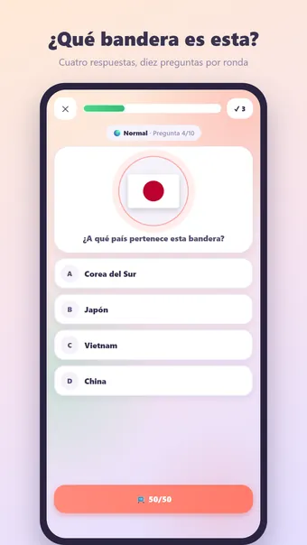
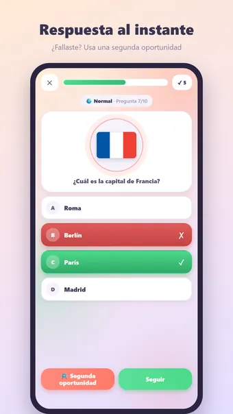
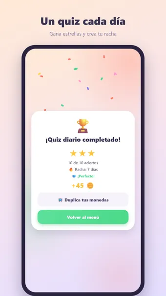

Sobre Quiz de Países
Juega a Quiz de Países y pon a prueba tus conocimientos del mundo entero: sin conexión, en cualquier momento y lugar. 193 países (todos los estados miembros de la ONU), cinco tipos de pregunta y diez preguntas por ronda.
Cinco tipos de pregunta
- ¿A qué país pertenece esta bandera?
- ¿Cuál es la capital de este país?
- ¿De qué país es esta la capital?
- ¿Qué país tiene más habitantes?
- ¿En qué continente está este país?
Con los iconos del menú eliges exactamente lo que quieres practicar: banderas, capitales, población, continentes o todo mezclado.
Cuatro niveles de dificultad
- Fácil: solo países famosos en todo el mundo
- Normal: un paso más allá
- Difícil: también los países menos conocidos
- Experto: todo, con distractores de la misma región — países vecinos que te hacen dudar
Cuanto mayor es la dificultad, más monedas ganas por acierto.
Quiz diario
Diez preguntas al día, iguales para todo el mundo. Gana una medalla de 1 a 3 estrellas y crea tu racha: 3, 7, 30 o incluso 100 días seguidos.
Vuelta al mundo
Viaja por mundos de diez niveles: primero Europa, Asia, África, América del Norte, América del Sur y Oceanía, y después mundos mixtos de todo el planeta. En cada mundo la dificultad sube de Fácil a Experto, con un cofre del tesoro en el nivel 10 y monedas extra en los hitos de los niveles 10, 25, 50 y 100.
Ayuda cuando dudas
Usa el 50/50 para descartar dos respuestas incorrectas por monedas o un anuncio corto. ¿Fallaste igualmente? Usa una segunda oportunidad y vuelve a intentar la misma pregunta.
Monedas y temas
Gana monedas con cada acierto y un bono por una ronda perfecta. Gástalas en la tienda en doce temas: Pastel, Oscuro, Claro, Bosque, Espacio, Neón, Madera, Mármol y los temas de temporada Primavera, Verano, Navidad y Halloween, además de estilos de confeti para tu victoria. Solo cosmético: sin pay-to-win.
Y además
- 27 logros, desde tu primera ronda hasta una racha de cien días
- Estadísticas con tu precisión por tipo de pregunta y por dificultad
- Nombres de países y capitales en español, inglés, neerlandés, alemán, francés y portugués
- Sonido y vibración, desactivables en los ajustes
- Recordatorio opcional del quiz diario
- Totalmente sin conexión: no necesitas internet ni cuenta para jugar
Gratis. La app muestra anuncios, que puedes quitar con una compra opcional; no necesitas cuenta.
Preguntas frecuentes
¿Quiz de Países es gratis?
Sí. Quiz de Países se descarga y se juega gratis. La app muestra anuncios, que puedes quitar con una compra opcional dentro de la app.
¿Quiz de Países funciona sin conexión?
Sí. Quiz de Países funciona sin conexión a internet, así que puedes jugar en el avión, en el tren o en cualquier sitio sin wifi.
¿Necesito una cuenta para jugar a Quiz de Países?
No. No hay que registrarse ni iniciar sesión: abre la app y juega. Tus partidas y ajustes se quedan en tu propio dispositivo.
¿Cómo se juega a Quiz de Países?
Juega a Quiz de Países y pon a prueba tus conocimientos del mundo entero: sin conexión, en cualquier momento y lugar. 193 países (todos los estados miembros de la ONU), cinco tipos de pregunta y diez preguntas por ronda.
¿Hay un reto nuevo cada día?
Diez preguntas al día, iguales para todo el mundo. Gana una medalla de 1 a 3 estrellas y crea tu racha: 3, 7, 30 o incluso 100 días seguidos.
¿Cuándo estará disponible Quiz de Países?
Quiz de Países llegará muy pronto a Google Play para móviles y tabletas Android. En cuanto salga, el botón de descarga aparecerá en esta página.
Otros juegos que te pueden gustar
Crucigrama
El crucigrama clásico. Puzles infinitos y un reto diario nuevo.
Google PlaySopa de Letras
La clásica sopa de letras. Puzles infinitos y un nuevo reto cada día.
Google Play30 Seconds
¡Describe 5 palabras en 30 segundos! Un divertido juego de palabras con amigos.
Google PlayInformación legal
Aquí encontrarás los documentos legales que se aplican a Quiz de Países.
Contacto
¿Preguntas, comentarios o una solicitud de privacidad? Escribe a joostmuijsenberg.dev@gmail.com.